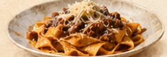
Pappardelle al Ragù
SLOW-BRAISED BEEF, RED WINE,
AND PARMIGIANO
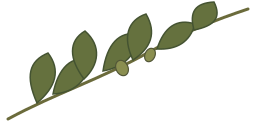
Osteria Verde · CUCINA ITALIANA ·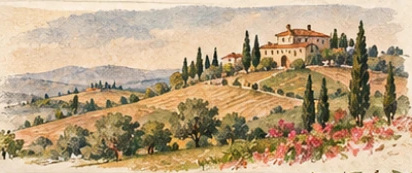
Benvenuti a casa
At Osteria Verde, we serve the food, wine, and hospitality of our family’s Italy, where meals linger, conversations flow, and every guest feels like famiglia.
Discover our cucina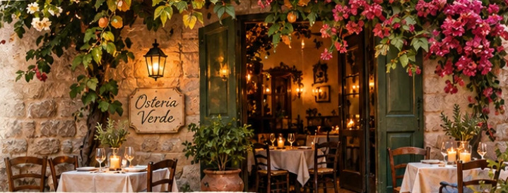
Osteria Verde began as a family dream, a way to bring the flavors, warmth, and togetherness of our Italian roots to this neighborhood we now call home.
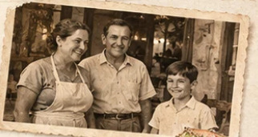
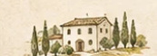
Nonna Rosa’s kitchen in Tuscany, where it all began.
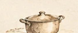
The family recipes travel overseas, keeping our traditions alive.
Osteria Verde opens its doors, a tribute to our family, our land, and the Italian table.
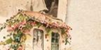
Still family-run, still cooking with heart, and still welcoming you come a tavola.
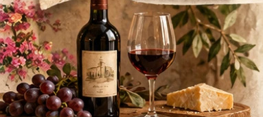
ITALIAN WINES, THOUGHTFULLY PAIRED
From rolling Tuscan reds to crisp Venetian whites, our wine list celebrates the regions and traditions that inspire our cucina.
WORDS FROM OUR TABLE
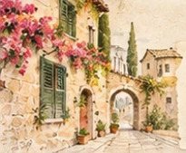
“A truly special place. The food is extraordinary, but it’s the warmth that keeps us coming back.”
“It feels like a trip to Italy without leaving the city. Romantic, welcoming, and absolutely delicious.”
“Osteria Verde is more than a restaurant, it’s a story, a family, and a taste of home.”
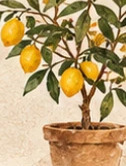
UN CALICE DI ITALIA
Follow the flavors of Italy, from the rolling Tuscan hills to the Venetian coast.
Bright cherry, herbs and a lingering savory finish.
Beautiful with Pappardelle al RagùFresh citrus, white blossoms and a delicate mineral note.
Beautiful with Burrata del CasaleVibrant dark fruit with a food-friendly freshness.
Beautiful with Tagliata di ManzoIllustrative pairings for the showroom demonstration.
CELEBRATE TOGETHER
Long lunches, family celebrations, and evenings worth remembering. Our private-dining experience is designed around the joy of gathering.
Imagine a relaxed evening with shared courses, thoughtfully paired wines, and the easy warmth of an Italian family meal.
This is a concept demonstration. No real event inquiry is sent.
UN POSTO A TAVOLA
Plan a lovely evening at Osteria Verde.
This is a showroom demonstration. No reservation was placed or sent to a restaurant.
Interactive website demo only. Times shown are examples, not live availability.